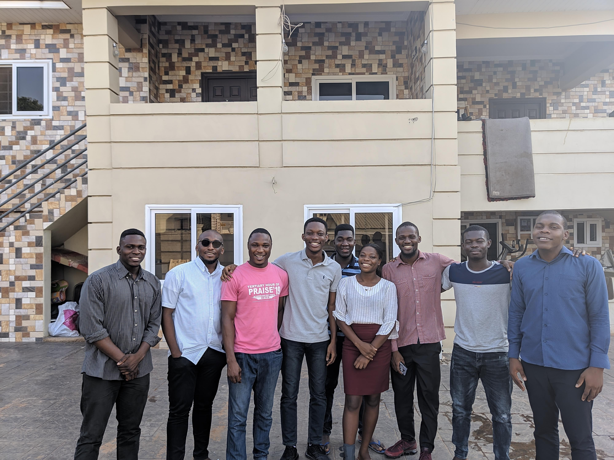
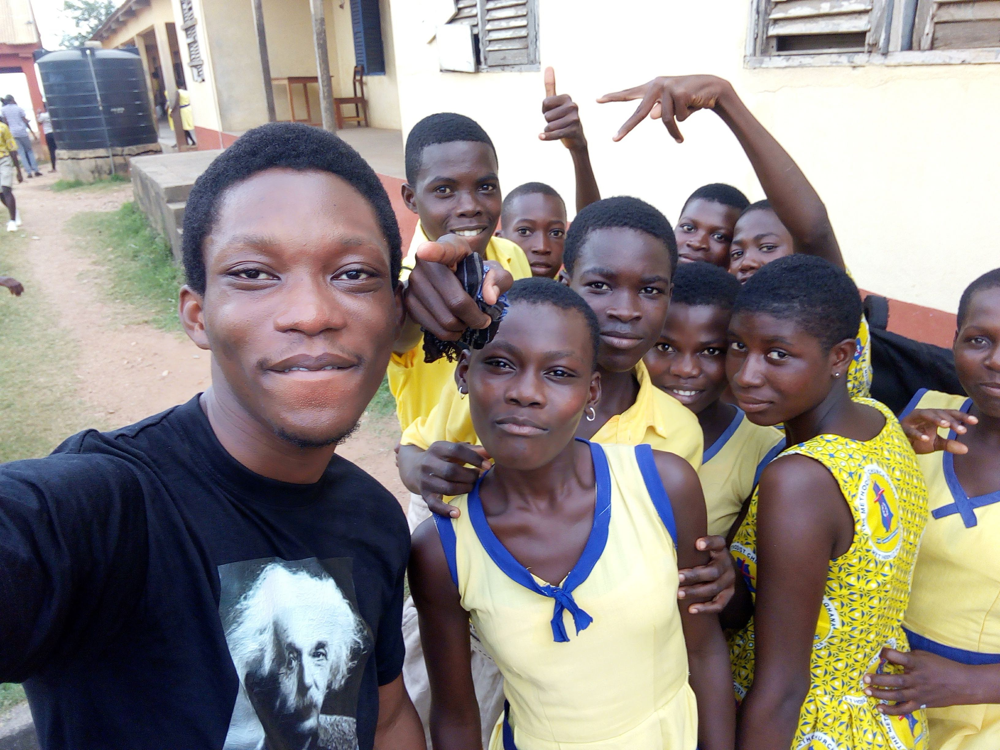

| ABOUT | WORK | EDUCATION | ACHIEVEMENTS | OUTREACH | SKILLS |
|
March 2020 I tutored data science students on introductory Linear Algebra, Calculus and Probability and Statistics. The experience was fun and educative with students coming from vary background and trying to make mathematics concepts not just theoretical but tangible so as students will appreciate what I call the soul of mathematics.  |
|
November 2018 As a MasterCard scholar, we embarked on an outreach to Biriwa Junior High School in Biriwa, Cape Coast. The objective of the outreach was to encourage students to pursue careers in science and also to dissipate the notion about mathematics been extremely difficult. The interest for mathematics was ignited through playing mathematical games with the students. I had fun educating and interacting with the students and challenged them to become the next Einstein.  |